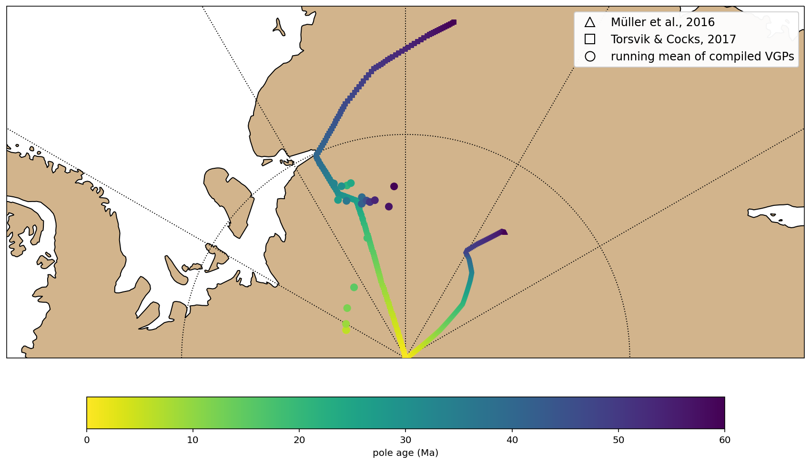

This notebook calculates North America APW based on .rot files from global plate reconstructions
Contents
This notebook calculates North America APW based on .rot files from global plate reconstructions#
import pmagpy.ipmag as ipmag
import numpy as np
import matplotlib.pyplot as plt
from matplotlib.lines import Line2D
from pole_rotation import*
import pygplates
import cartopy.crs as ccrs
import cartopy
import pandas as pd
%config InlineBackend.figure_format = 'retina'
fixed_plate = 1 # fix spin axis
NAM = 101 # plate number for North America
resolution = 200 # resolution of the APW to calculate
max_age = 60 # max age in Ma, min age is 0 Ma
import the result of running mean of recomputed study level paleomagnetic poles#
RM_APWP_rec_POLES = pd.read_csv('../data/RM_APWP_rec_POLES.csv')
RM_APWP_rec_POLES
| age | N | n_studies | k | A95 | csd | plon | plat | geom | kappa_norm | N_norm | |
|---|---|---|---|---|---|---|---|---|---|---|---|
| 0 | 0.0 | 15.0 | 15.0 | 156.445419 | 3.066621 | 6.475952 | 295.238097 | -87.078353 | POLYGON ((-64.76190318007292 -84.0267771274608... | 0.167293 | 0.833333 |
| 1 | 3.0 | 15.0 | 15.0 | 156.445419 | 3.066621 | 6.475952 | 295.238097 | -87.078353 | POLYGON ((-64.76190318007292 -84.0267771274608... | 0.167293 | 0.833333 |
| 2 | 6.0 | 15.0 | 15.0 | 156.445419 | 3.066621 | 6.475952 | 295.238097 | -87.078353 | POLYGON ((-64.76190318007292 -84.0267771274608... | 0.167293 | 0.833333 |
| 3 | 9.0 | 16.0 | 16.0 | 162.724036 | 2.900340 | 6.349787 | 299.799316 | -86.944434 | POLYGON ((-60.20068443507421 -84.0583190163856... | 0.174007 | 0.888889 |
| 4 | 12.0 | 18.0 | 18.0 | 160.764047 | 2.734593 | 6.388377 | 310.549641 | -86.580159 | POLYGON ((-49.45035864633746 -83.8589570107034... | 0.171911 | 1.000000 |
| 5 | 15.0 | 10.0 | 10.0 | 199.151883 | 3.431521 | 5.739748 | 323.907997 | -86.104514 | POLYGON ((-36.09200334124313 -82.6897042881403... | 0.212961 | 0.555556 |
| 6 | 18.0 | 9.0 | 9.0 | 314.236975 | 2.908877 | 4.569371 | 342.307196 | -84.383807 | POLYGON ((-17.6928044967147 -81.48893418848684... | 0.336025 | 0.500000 |
| 7 | 21.0 | 7.0 | 7.0 | 935.158537 | 1.975052 | 2.648759 | 341.241992 | -81.863357 | POLYGON ((-18.75800828690251 -79.8976171374349... | 1.000000 | 0.388889 |
| 8 | 24.0 | 5.0 | 5.0 | 901.354150 | 2.550063 | 2.697971 | 342.634924 | -81.817309 | POLYGON ((-17.36507572039818 -79.2792216122420... | 0.963852 | 0.277778 |
| 9 | 27.0 | 6.0 | 6.0 | 587.913266 | 2.765648 | 3.340630 | 336.878569 | -82.328426 | POLYGON ((-23.12143084436519 -79.5758274002022... | 0.628678 | 0.333333 |
| 10 | 30.0 | 8.0 | 8.0 | 523.892901 | 2.422357 | 3.538863 | 339.555483 | -81.812781 | POLYGON ((-20.4445172871649 -79.40180776257097... | 0.560218 | 0.444444 |
| 11 | 33.0 | 9.0 | 9.0 | 541.273373 | 2.214970 | 3.481582 | 337.691918 | -81.573578 | POLYGON ((-22.30808177519555 -79.3690001337157... | 0.578804 | 0.500000 |
| 12 | 36.0 | 7.0 | 7.0 | 239.198604 | 3.910975 | 5.237279 | 339.405472 | -82.508216 | POLYGON ((-20.59452775998136 -78.6156013425680... | 0.255784 | 0.388889 |
| 13 | 39.0 | 11.0 | 11.0 | 211.882138 | 3.143916 | 5.564650 | 344.801576 | -82.562806 | POLYGON ((-15.19842400102357 -79.4337297193055... | 0.226573 | 0.611111 |
| 14 | 42.0 | 10.0 | 10.0 | 196.703372 | 3.452916 | 5.775361 | 344.131297 | -82.844806 | POLYGON ((-15.86870264994769 -79.4082106009215... | 0.210342 | 0.555556 |
| 15 | 45.0 | 11.0 | 11.0 | 213.409577 | 3.132594 | 5.544700 | 346.081032 | -82.762340 | POLYGON ((-13.91896794557266 -79.6445666951602... | 0.228207 | 0.611111 |
| 16 | 48.0 | 10.0 | 10.0 | 193.848621 | 3.478374 | 5.817731 | 347.111045 | -82.858728 | POLYGON ((-12.88895530006937 -79.3967946236349... | 0.207290 | 0.555556 |
| 17 | 51.0 | 10.0 | 10.0 | 193.848621 | 3.478374 | 5.817731 | 347.111045 | -82.858728 | POLYGON ((-12.88895530006937 -79.3967946236349... | 0.207290 | 0.555556 |
| 18 | 54.0 | 8.0 | 8.0 | 178.560606 | 4.156552 | 6.061669 | 348.975062 | -82.826169 | POLYGON ((-11.02493830709534 -78.6891743844885... | 0.190942 | 0.444444 |
| 19 | 57.0 | 7.0 | 7.0 | 170.239065 | 4.639655 | 6.208053 | 353.664477 | -83.204284 | POLYGON ((-6.335522953682755 -78.5864892889089... | 0.182043 | 0.388889 |
| 20 | 60.0 | 5.0 | 5.0 | 190.974338 | 5.550905 | 5.861348 | 356.146266 | -82.323122 | POLYGON ((-3.853733924389701 -76.7979244256244... | 0.204216 | 0.277778 |
Get APW from Muller et al., 2016#
Müller, R. D., Seton, M., Zahirovic, S., Williams, S. E., Matthews, K. J., Wright, N. M., … & Cannon, J. (2016). Ocean basin evolution and global-scale plate reorganization events since Pangea breakup. Annual Review of Earth and Planetary Sciences, 44, 107-138. DOI:10.1146/annurev-earth-060115-012211
Muller2016_rotation_file = '../data/Muller2016a_Global_EarthByte_230-0Ma_GK07_AREPS.rot'
Muller2016_rotation_model = pygplates.RotationModel(Muller2016_rotation_file)
times = np.linspace( 0., max_age, resolution)
lats = np.empty_like(times)
lons = np.empty_like(times)
pole = PlateCentroid( 0., -90. )
angles = np.empty_like(times)
Euler_lats = np.empty_like(times)
Euler_lons = np.empty_like(times)
for i,t in enumerate(times):
start_time = 0. if t==0. else times[i-1]
rotation = Muller2016_rotation_model.get_rotation( t, NAM, start_time, fixed_plate)
lat, lon, angle = rotation.get_lat_lon_euler_pole_and_angle_degrees()
Euler_lats[i] = lat
Euler_lons[i] = lon
euler_pole = EulerPole( lon, lat, 1.) # Don't care about the rate here
pole.rotate( euler_pole, -angle)
angles[i] = angle*resolution/max_age
lats[i] = pole.latitude
lons[i] = pole.longitude
average_rotation = Muller2016_rotation_model.get_rotation(times[-1], NAM, 0.0, fixed_plate)
print(average_rotation.get_lat_lon_euler_pole_and_angle_degrees())
ax = ipmag.make_orthographic_map(0, -90, figsize=(15,15))
ipmag.plot_poles_colorbar(ax,lons,
lats,
np.zeros(len(lats)),
times,
0,max_age,colormap='viridis_r',
markersize=20,marker='s',edgecolor=None)
ax.set_global()
ax.gridlines()
lon_shift=0.
plt.show()
np.savetxt('code_output/NAM_0_60_muller_2016.txt', np.array([times, lons, lats,angles, Euler_lons, Euler_lats]).T )
(-58.09626049814988, -43.552580884779644, -13.799284647523002)
Get APW from Torsvik and Cocks 2017#
Torsvik2017_rotation_file = '../data/Torsvik_Cocks_HybridRotationFile.rot'
Torsvik2017_rotation_model = pygplates.RotationModel(Torsvik2017_rotation_file)
times = np.linspace( 0., max_age, resolution)
lats = np.empty_like(times)
lons = np.empty_like(times)
pole = PlateCentroid( 0., -90. )
angles = np.empty_like(times)
Euler_lats = np.empty_like(times)
Euler_lons = np.empty_like(times)
for i,t in enumerate(times):
start_time = 0. if t==0. else times[i-1]
rotation = Torsvik2017_rotation_model.get_rotation( t, NAM, start_time, fixed_plate)
lat, lon, angle = rotation.get_lat_lon_euler_pole_and_angle_degrees()
Euler_lats[i] = lat
Euler_lons[i] = lon
euler_pole = EulerPole( lon, lat, 1.) # Don't care about the rate here
pole.rotate( euler_pole, -angle)
angles[i] = angle*resolution/max_age
lats[i] = pole.latitude
lons[i] = pole.longitude
average_rotation = Torsvik2017_rotation_model.get_rotation(times[-1], NAM, 0.0, fixed_plate)
print(average_rotation.get_lat_lon_euler_pole_and_angle_degrees())
ax = ipmag.make_orthographic_map(0, -90, figsize=(15,15))
ipmag.plot_poles_colorbar(ax,lons,
lats,
np.zeros(len(lats)),
times,
0,max_age,colormap='viridis_r',
markersize=20,marker='s',edgecolor=None)
ax.set_global()
ax.gridlines()
lon_shift=0.
plt.show()
# np.savetxt('code_output/NAM_0_60_torsvik_2017.txt', np.array([times, lons, lats,angles, Euler_lons, Euler_lats]).T )
(-27.95597015208589, -78.15137649104618, -18.537191039711207)
import the exported .txt files for easy use#
Mueller2016_path = np.loadtxt('code_output/NAM_0_60_muller_2016.txt', )
Mueller2016_path_df = pd.DataFrame(Mueller2016_path, columns = ['age','plon', 'plat', 'Euler_angle', 'Euler_lon', 'Euler_lat'])
Mueller2016_path_df
| age | plon | plat | Euler_angle | Euler_lon | Euler_lat | |
|---|---|---|---|---|---|---|
| 0 | 0.000000 | 0.000000 | -90.000000 | 0.000000 | 0.000000 | 90.000000 |
| 1 | 0.301508 | 52.228645 | -89.946568 | -0.229759 | -37.749583 | -39.177378 |
| 2 | 0.603015 | 52.165642 | -89.893127 | -0.229759 | -37.832059 | -39.166585 |
| 3 | 0.904523 | 52.102655 | -89.839679 | -0.229759 | -37.914503 | -39.155706 |
| 4 | 1.206030 | 52.039684 | -89.786222 | -0.229759 | -37.996916 | -39.144743 |
| ... | ... | ... | ... | ... | ... | ... |
| 195 | 58.793970 | 37.906944 | -82.869672 | -0.189735 | 21.967943 | -69.767020 |
| 196 | 59.095477 | 38.004656 | -82.864213 | -0.189735 | 21.855393 | -69.768775 |
| 197 | 59.396985 | 38.102076 | -82.858685 | -0.189735 | 21.742827 | -69.770478 |
| 198 | 59.698492 | 38.199204 | -82.853089 | -0.189735 | 21.630245 | -69.772128 |
| 199 | 60.000000 | 38.296035 | -82.847424 | -0.189735 | 21.517649 | -69.773726 |
200 rows × 6 columns
Torsvik2017_path = np.loadtxt('code_output/NAM_0_60_torsvik_2017.txt', )
Torsvik2017_path_df = pd.DataFrame(Torsvik2017_path, columns = ['age','plon', 'plat', 'Euler_angle', 'Euler_lon', 'Euler_lat'])
Torsvik2017_path_df
| age | plon | plat | Euler_angle | Euler_lon | Euler_lat | |
|---|---|---|---|---|---|---|
| 0 | 0.000000 | 0.000000 | -90.000000 | 0.000000 | 0.000000 | 90.000000 |
| 1 | 0.301508 | -16.186464 | -89.890629 | 0.397010 | 73.837113 | 23.322693 |
| 2 | 0.603015 | -16.234537 | -89.781236 | 0.397137 | 73.788190 | 23.338774 |
| 3 | 0.904523 | -16.282648 | -89.671821 | 0.397265 | 73.739244 | 23.354757 |
| 4 | 1.206030 | -16.330797 | -89.562385 | 0.397392 | 73.690274 | 23.370643 |
| ... | ... | ... | ... | ... | ... | ... |
| 195 | 58.793970 | 6.992454 | -74.938720 | -0.328268 | -26.467853 | -2.734028 |
| 196 | 59.095477 | 7.291726 | -74.884280 | -0.328358 | -26.450513 | -2.754063 |
| 197 | 59.396985 | 7.588899 | -74.829425 | -0.328448 | -26.433260 | -2.774169 |
| 198 | 59.698492 | 7.883980 | -74.774158 | -0.328538 | -26.416094 | -2.794346 |
| 199 | 60.000000 | 8.176976 | -74.718484 | -0.328629 | -26.399017 | -2.814594 |
200 rows × 6 columns
lat_grid=[-80., -60., -30.,0., 30., 60., 80.]
lon_grid=[-180., -150., -120., -90., -60., -30., 0., 30., 60., 90., 120., 150., 180.]
map_proj_S = ccrs.Orthographic(central_longitude=0, central_latitude=-90)
fig = plt.figure(figsize=(15,15))
ax = fig.add_subplot(1,1,1, projection=map_proj_S, )
ax.add_feature(cartopy.feature.LAND, zorder=0,
facecolor='tan', edgecolor='k')
ax.gridlines(xlocs=lon_grid, ylocs=lat_grid, linewidth=1,
color='black', linestyle='dotted')
ax.set_extent((-90,90,-72,-90), crs=ccrs.PlateCarree())
ipmag.plot_poles_colorbar(ax,Mueller2016_path_df['plon'],
Mueller2016_path_df['plat'],
np.zeros(Mueller2016_path_df.shape[0]),
Mueller2016_path_df['age'],
0,max_age,colormap='viridis_r',
markersize=20,
marker='^',
edgecolor=None)
ipmag.plot_poles_colorbar(ax,Torsvik2017_path_df['plon'],
Torsvik2017_path_df['plat'],
np.zeros(Torsvik2017_path_df.shape[0]),
Torsvik2017_path_df['age'],
0,max_age,colormap='viridis_r',
colorbar=0,
markersize=20,
marker='s',
edgecolor=None)
ipmag.plot_poles_colorbar(ax, RM_APWP_rec_POLES['plon'],
RM_APWP_rec_POLES['plat'],
# RM_APWP_rec_POLES['A95'],
np.zeros(RM_APWP_rec_POLES.shape[0]),
RM_APWP_rec_POLES['age'],
0,
max_age,
colormap='viridis_r',
colorbar=0,
markersize=50,
edgecolor=None)
Muller_poles = Line2D([],[], markerfacecolor='none', marker = '^', linestyle='None', markeredgecolor='k', markersize=10,
label = 'Müller et al., 2016')
Torsvik_poles = Line2D([],[], markerfacecolor='none', marker = 's', linestyle='None', markeredgecolor='k', markersize=10,
label = 'Torsvik & Cocks, 2017')
running_mean_poles = Line2D([],[], markerfacecolor='none', marker = 'o', linestyle='None', markeredgecolor='k', markersize=10,
label = 'running mean of compiled VGPs')
legend_1 = plt.legend(handles=[Muller_poles, Torsvik_poles, running_mean_poles], loc='upper right', fontsize=12)
plt.gca().add_artist(legend_1)
plt.show()
